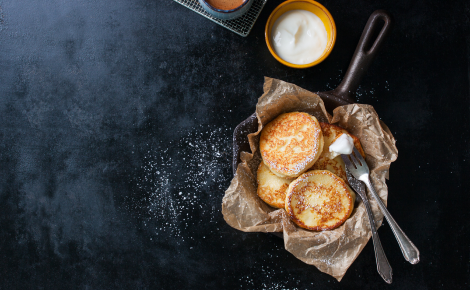

Творожные сырники с бананом и шоколадом
Необычный вариант десерта, который особенно оценят сладкоежки — сырники с бананом и шоколадом. Растаявший шоколад внутри и румянная корочка — это невероятно вкусно, а также очень быстро в приготовлении!